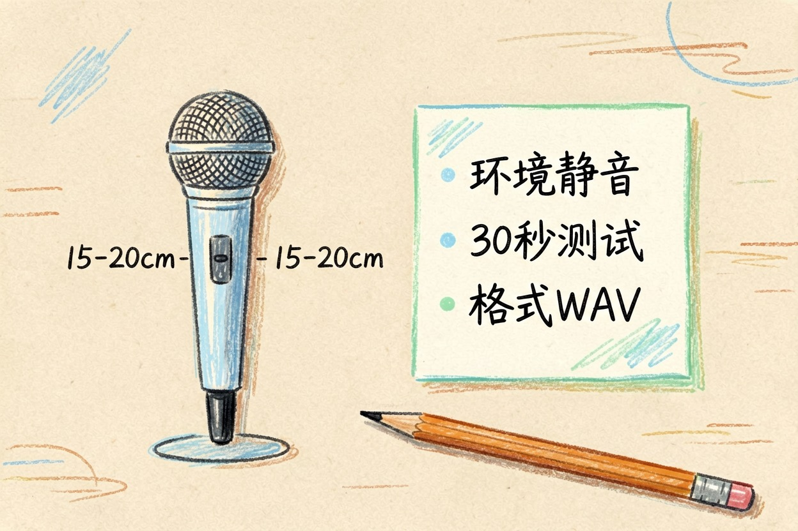
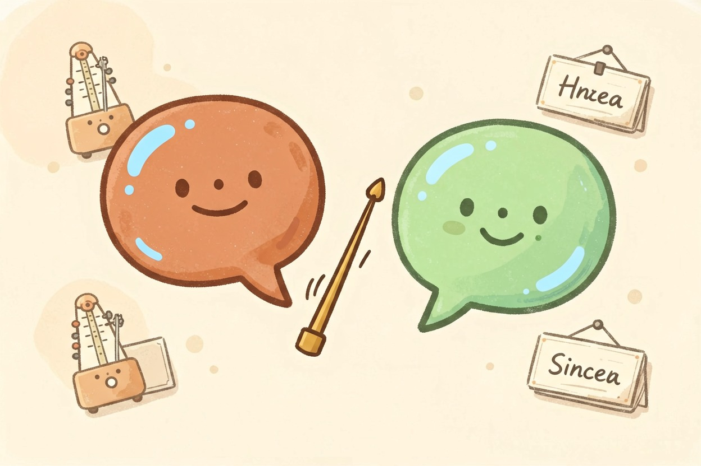
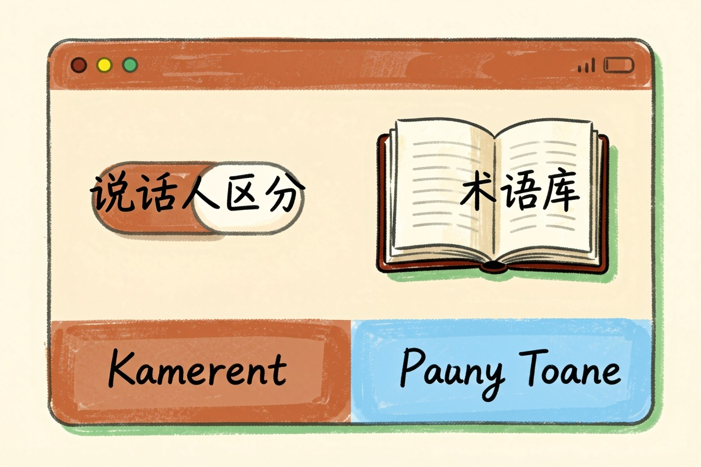
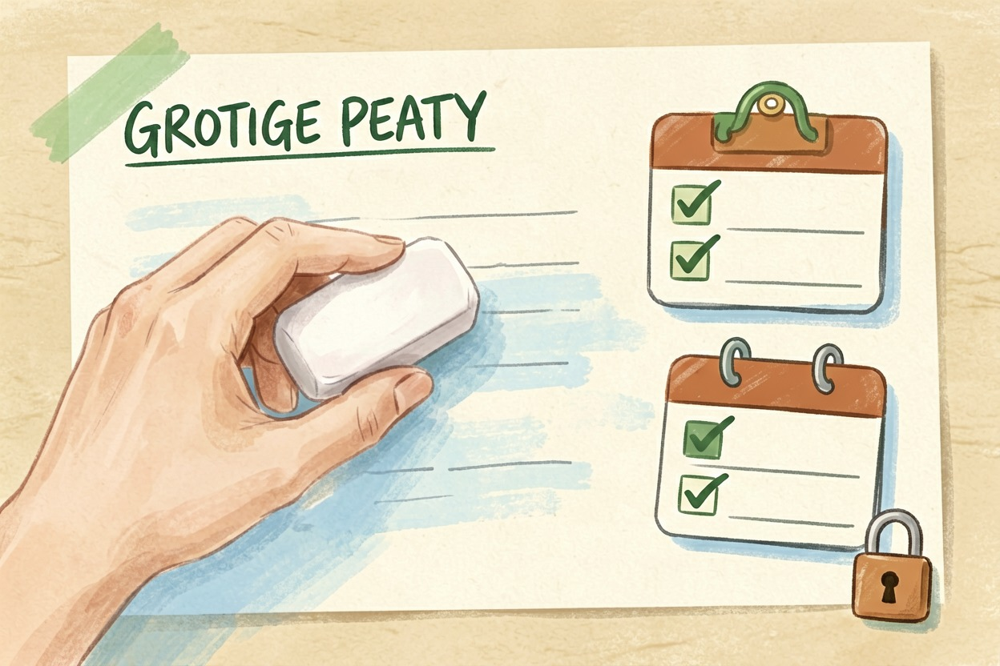

AI 会议录音转录技巧：四大实操技巧让纪要准确率翻倍 2026
会议录音最怕乱：交叉对话、模糊发音、环境噪音都会让转录结果一团糟。掌握这些技巧，让 AI 输出更准确、更规范的记录
AI会议录音转录技巧是本文的核心主题，下面详细介绍如何使用。
AI 会议录音转录技巧：会前准备

AI 会议录音转录技巧的第一步，是确保音频清晰。外接 USB 麦克风，音质明显好于内置麦克风。建议放在桌面正前方，距离嘴部 15-20 厘米。
提前关闭手机通知、空调等噪音源，保持会议室安静。打开 AI 转录工具，先测试 30 秒录音，确认语音识别正常。
我在一次中英混合的评审会上遇到这个问题：AI 把「OKR 落地」识别成了「OK 了落地」。结果整段纪要要手动改，花了二十分钟。国内环境推荐使用飞书{:target="_blank"}妙记、钉钉{:target="_blank"}闪记、腾讯会议{:target="_blank"} AI，延迟更低，更稳定。
录音格式建议用 MP3 或 WAV，采样率 44.1kHz 以上。同时录两份，一份备份，一份供转录。会前打印参会人员名单发给 AI，标记更准。
会前录音检查清单：
- [ ] 麦克风已连接，音质清晰
- [ ] 环境噪音已关闭
- [ ] 手机/电脑通知已静音
- [ ] AI 转录工具已开启
- [ ] 参与者姓名已提前录入会中规范：发言习惯影响转录效果

工具与功能设置优化

开启说话人区分功能，让 AI 自动标记每段发言来自谁。对多人会议尤其重要。提前录入专业词典，包括公司名、产品代号和技术缩写，让 AI 能准确识别。
中英混合会议时，先在设置里标注主要语言。多语言会议建议先用中文开场，再切换英文，减少语言混切带来的识别误差。设置关键词提醒，让 AI 重点标记关键信息，方便会后快速定位。
部分工具支持自定义转写规则，比如数字识别格式、时间格式、货币符号。提前配置好，可大幅减少后期人工修正的工作量。
会后处理：编辑、总结与分发

补充：AI会议录音转录技巧的详细用法可参考上文步骤。
补充：AI会议录音转录技巧的详细用法可参考上文步骤。
补充：AI会议录音转录技巧的详细用法可参考上文步骤。
先修正 AI 误识别的内容。特别是数字、日期和专业术语，AI 容易出错。再生成会议纪要，提炼行动项和责任人，确保每项任务都有明确归属。
最后做好存储和权限管理，敏感内容别放公开网盘。纪要模板建议包含：日期、参会者、议题、结论、待办、截止时间，24 小时内分发。
敏感会议建议会后删除云端录音，仅保留本地文本纪要。一句话：先录音，再转录，最后删。
关于AI会议录音转录技巧，建议结合实操理解，多看多试。
---
最后提醒
A: 掌握 AI会议录音转录技巧 的关键在于多实践，建议先跑通基础流程再逐步深入。
Q: AI会议录音转录技巧 免费吗？ A: 大多数工具提供基础免费额度，具体以官网当前说明为准。
AI会议录音转录技巧的最佳实践见上文详细步骤，别错过核心要点。
本文信息核对于 2026-08-06。AI 产品的价格、免费额度与功能变动频繁，实际以各工具官网当前说明为准。